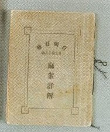
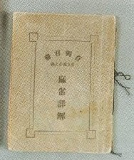

（１a）肖閑生 . 肖閑生（しょうかんせい）はペンネーム。意訳すれば「暇つぶし生」というほどの意味。 麻雀界の大先人であるが、残念ながら、履歴等はいっさい不明。 大正６年12月１日、上海にて日本語による最初の麻雀入門書「麻雀詳解」を刊行した。この１冊をもって、麻雀史に永久に名前を残す。  この「麻雀詳解」、現存するのはホンの数冊という、超幻の古書。
肖閑生（しょうかんせい）はペンネーム。意訳すれば「暇つぶし生」というほどの意味。 麻雀界の大先人であるが、残念ながら、履歴等はいっさい不明。 大正６年12月１日、上海にて日本語による最初の麻雀入門書「麻雀詳解」を刊行した。この１冊をもって、麻雀史に永久に名前を残す。  この「麻雀詳解」、現存するのはホンの数冊という、超幻の古書。
以降へ 目次へ